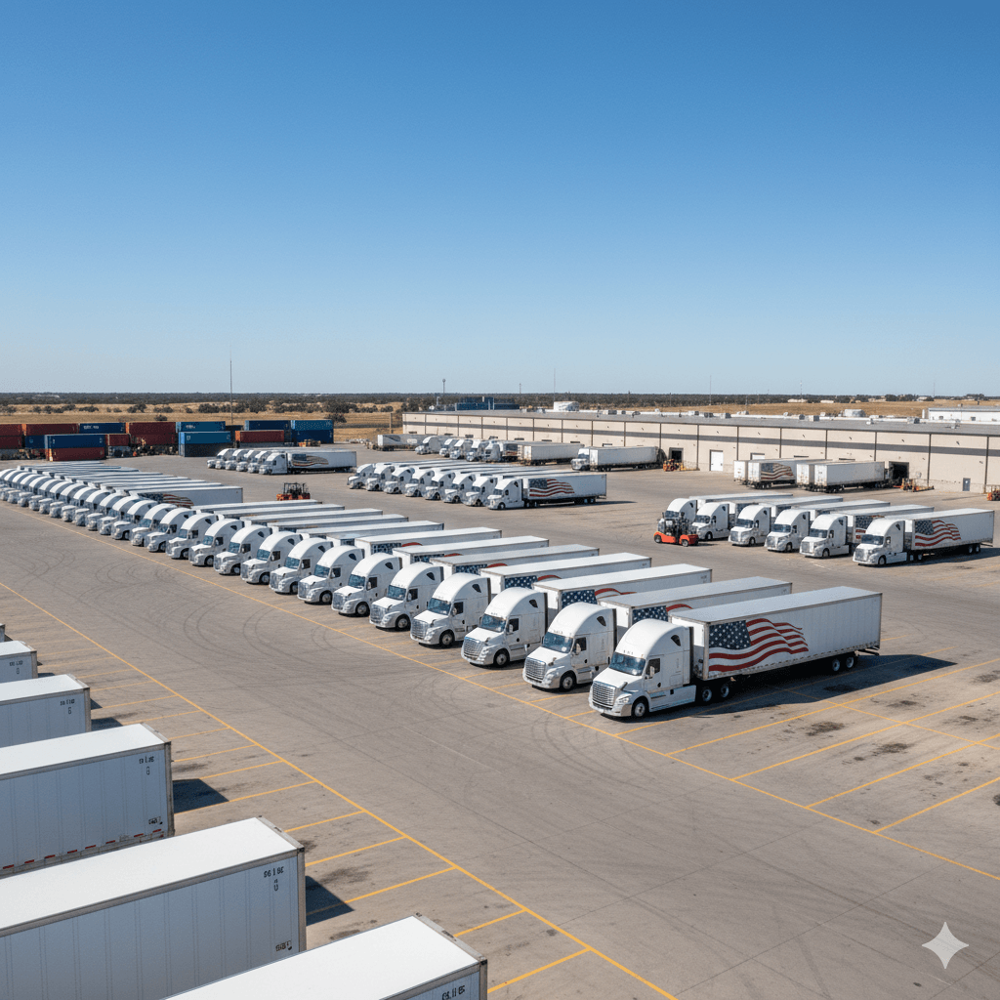
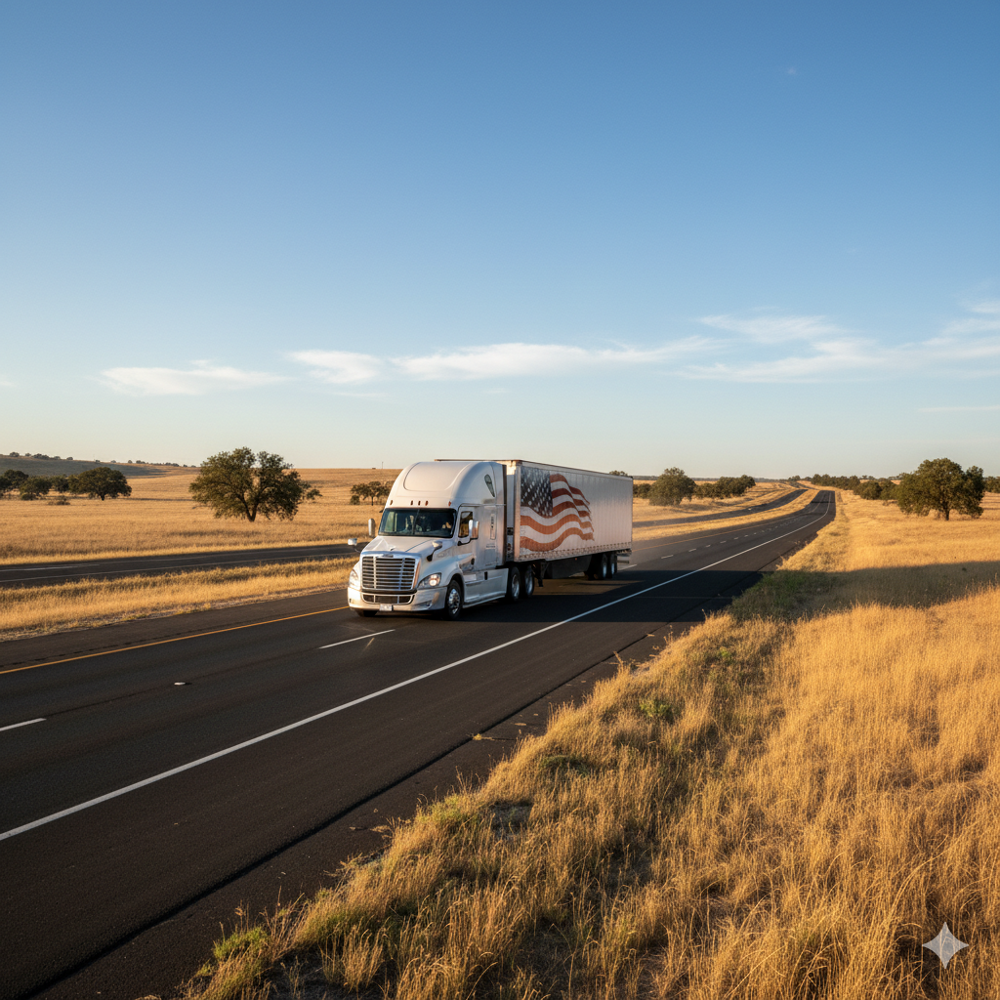

Port-Driven Import and Container Movement
Strong presence across major ports supporting container pickup, drayage operations, and inland distribution into key western and central markets.
Coverage Network
HHT Freight Group supports freight movement across the 48 contiguous United States, connecting ports, rail terminals, and inland distribution centers through coordinated logistics planning and reliable transportation execution.

Coverage Overview
HHT Freight Group supports freight movement across major US regions, connecting ports, rail terminals, and inland distribution networks through structured route planning and coordinated execution.
Regional Coverage
Strong presence across major ports supporting container pickup, drayage operations, and inland distribution into key western and central markets.
Coverage across manufacturing regions and warehouse networks, supporting linehaul freight movement and regional distribution operations.
Extensive routing across southern freight corridors connecting major distribution centers and supporting large-scale shipment movement.
Integrated port connectivity combined with inland transportation, enabling efficient movement from coastal terminals to final destinations.
Coverage Visuals




Coverage Workflow
Origin, destination, and key transit points are defined to establish the most efficient freight route.
Appropriate service type such as FTL, LTL, drayage, or port-linked transport is selected based on shipment needs.
Freight movement is structured across corridors, hubs, and handoff points to ensure efficient transit flow.
Shipments are executed with coordinated tracking, ensuring visibility and reliability across all stages of transport.